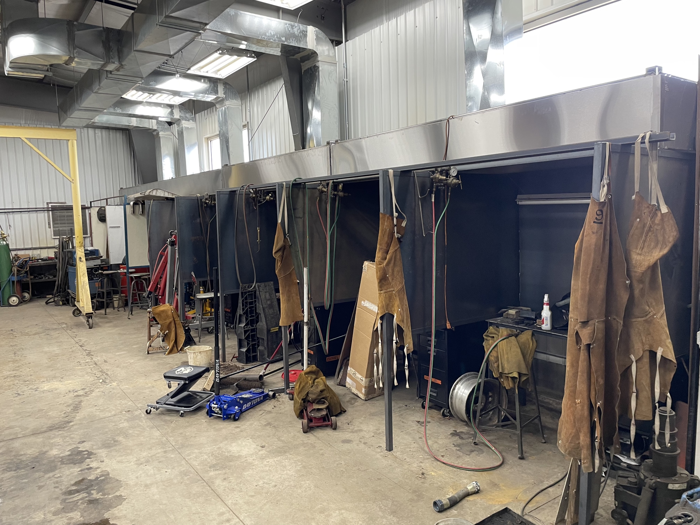

Andrews University
I've just graduated high school, and after a long time of research and prayer, I feel that God is leading me towards Andrews University.
They have a flight and maintenance program for much cheaper than all the other options. I'm also excited about their food — since Andrews is Seventh Day Adventist, their cafeteria is completely vegetarian, and is much better than all the other school cafeterias that I tried while touring.
However, I am a little nervous about the fact that they are such a different denomination than I am used to. I have been looking for a covenant church in the surrounding area (I'll have a car, so I can go to church outside of school). Paul Lessard has recommended Harbert Community Church, so I will be looking more into them as I get closer to leaving.
My first two semesters will consist entirely of maintenance training, from 8 to 5 Monday through Friday. My Fall/Thanksgiving breaks are too short to fly home, so I won't be able to get back to Colorado until winter break, however it is a month long! I will stay in school over the summer to start my Instrument rating.
Their airport has a small grass strip, so I may even get to learn real soft field takeoffs and landings! I am both excited and nervous, but I know that God will take care of me.
